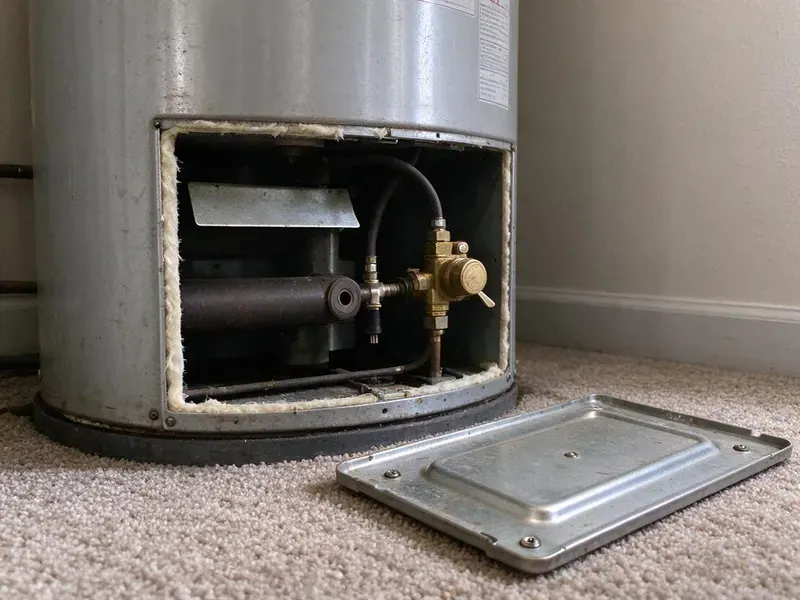

Sewer Repair in Highlands Ranch, CO
When you need dependable sewer repair in Highlands Ranch, CO, GFR Plumbing is the team locals trust. We handle everything from minor clogs to major line breaks quickly and efficiently.
- Warrantied Work
- Prompt, Local Service
- Long-Lasting Repairs
- Fast Sewer Diagnostics

Need Fast Sewer Repair in Highlands Ranch, CO?
Get a flat-rate sewer repair quote with video proof of the problem and a clear plan to fix it.
Sewer Repair in Highlands Ranch, CO for Cracked, Rooted and Collapsed Lines
GFR Plumbing offers full-service sewer repair across Highlands Ranch, CO. Our experienced technicians are equipped to handle any sewer line problem, from minor blockages to major pipe damage caused by tree roots or shifting soil. We use advanced diagnostic tools to pinpoint the exact issue quickly and recommend the most effective, long-lasting fix.
Our expertise includes:
- Precision Pipe Repair and Replacement
- HD sewer camera inspection with depth locating and recorded video
- Spot repairs on clay, cast iron, ABS and PVC sewer lines

Additional Plumbing Repair Services in Highlands Ranch, CO
We offer expert plumbing repair services across Highlands Ranch, CO to stop leaks, clear blockages, and keep every fixture working the way it should.


Customers
Why Choose GFR Plumbing for Sewer Repair in Highlands Ranch, CO?
A failing sewer line does not fix itself, and every flush adds more water to the soil under your home. We find the real cause fast and repair only what needs repairing, so you are not paying to replace a line that still has years left.
- Local Knowledge, We know the plumbing challenges faced by homeowners in Colorado, including soil conditions and weather effects on sewer lines.
- Right-Sized Fixes, We repair a single bad joint when that is all it needs instead of selling a whole new line.
- Video Proof, You see the crack, root mass or belly on screen before you approve a single repair.
Citywide Coverage
No matter where your home is located in Highlands Ranch, our sewer repair specialists are just a call away. We pride ourselves on offering consistent, high-quality plumbing services to all residents for your peace of mind.
Experienced Team
Our sewer techs have repaired thousands of feet of main line, including clay hub joints, rusted cast iron and Orangeburg fiber pipe. They read camera footage fast and can tell a belly from a break at a glance.
Safety-First Approach
Sewer work involves raw waste, deep trenches and buried utilities, so we call 811 before every dig and follow trench safety rules. We wear proper protective gear and disinfect any affected areas when we are done.
Trusted Certified Highlands Ranch Plumbing Services Professionals
At GFR Plumbing, we take pride in providing licensed, certified plumbing services throughout Highlands Ranch, CO. Backed by leading industry credentials, our experienced plumbers combine technical skill with genuine customer care. Whether it is repair, installation, or maintenance, we follow strict safety and quality standards to deliver long-lasting results you can trust.
Call Us Now PHCC Plumbing Contractor Recognition
PHCC Plumbing Contractor Recognition Better Business Bureau (BBB) Accreditation
Better Business Bureau (BBB) Accreditation Angi Certified Pro
Angi Certified Pro ISO 9001 Quality Management Certification
ISO 9001 Quality Management CertificationLasting Sewer Repair Services in Highlands Ranch, CO
Sewer Line Leak Detection & Repair in Highlands Ranch, CO
Undetected sewer line leaks can lead to unpleasant odors, wet spots in your yard and even structural damage to your home's foundation. GFR Plumbing uses accurate leak detection methods to pinpoint the source of the leak, whether it's a minor crack or a significant break. Once identified, we provide targeted repairs, from patching small leaks to replacing compromised sections of pipe, ensuring a watertight system.

Tree Root Invasion Solutions in Highlands Ranch
Tree roots are a common culprit for sewer line damage in Colorado, attracted to the moisture and nutrients inside pipes. They can infiltrate tiny cracks, expand and eventually crush or clog the line. Our technicians are adept at diagnosing root intrusion using camera technology. We can remove roots with specialized cutting tools and recommend preventive measures or durable pipe relining solutions to prevent future invasions, protecting your home's foundation.
Sewer Line Backups & Blockages in Highlands Ranch
Sewer backups are often caused by severe blockages from grease buildup, foreign objects or extensive tree root intrusion. Our team uses advanced sewer camera inspections to identify the exact cause and location of the blockage. We then use hydro-jetting or mechanical snaking to clear the obstruction, restoring proper flow to your system and preventing further damage. This approach is very effective for the stubborn clogs often found in older Colorado homes.
Pipe Burst and Collapse Repair in Highlands Ranch, CO
A burst or collapsed sewer pipe can lead to serious damage and unsanitary conditions. These issues can result from shifting soil, corrosion of old cast iron or clay pipes, or heavy vehicle traffic above the line. GFR Plumbing offers emergency repair services to promptly address these critical failures. We accurately locate the damaged section and provide durable repair or replacement options, often using trenchless methods where appropriate to limit disruption.
Sewer Line Hydro-Jetting in Highlands Ranch
Hydro-jetting is a powerful cleaning method that uses high-pressure water streams to clear stubborn blockages, grease buildup and even tree roots from sewer lines. It's much more effective than snaking for thorough cleaning and preventing recurring clogs. This service is especially helpful for restaurants and commercial properties in Highlands Ranch dealing with heavy grease accumulation, as well as homes with recurring drain issues.
Emergency Sewer Repair in Highlands Ranch
Sewer emergencies, like major backups or foul odors, require immediate attention. GFR Plumbing offers fast response for emergency sewer repair throughout Highlands Ranch. Our team is on standby to diagnose and fix urgent problems, preventing further damage to your property and restoring sanitation. We prioritize these critical issues so your home's plumbing is promptly brought back to safe operating condition, even outside of regular business hours.
Video Camera Sewer Inspection in Highlands Ranch
Before any repair, we use advanced video camera inspection to precisely locate and assess sewer line damage. This involves inserting a flexible rod with a camera into your sewer line, allowing us to see blockages, cracks, root intrusion or pipe collapses in real time. This non-invasive method prevents unnecessary digging and helps us provide a clear diagnosis and repair plan. It's crucial for understanding issues in older homes in Highlands Ranch and identifying problems like bellied pipes or collapsed sections.

Sewer Camera Inspection in Highlands Ranch
Every sewer repair starts with a look inside the pipe. We run a self-leveling camera from your cleanout or a pulled toilet and record the full length of the line. A sonde in the camera head lets us mark the exact location and depth of every problem on the surface. You get a copy of the video and a plain-language summary of what we found. This step alone frequently saves homeowners from paying for repairs they do not need.
Sewer Repair Near Me in Highlands Ranch, CO
No matter where you are in the greater Highlands Ranch area, our skilled plumbers are ready to address your sewer repair concerns promptly and professionally. We understand the urgency of sewer problems and strive to deliver efficient, effective service right to your doorstep.
When you search for 'sewer repair near me' in Highlands Ranch, CO, GFR Plumbing is the go-to local choice. Our location allows us to respond quickly to your calls, often providing same-day service for urgent sewer issues. We are familiar with the plumbing infrastructure and challenges in our local communities.
GFR Plumbing at a Glance
- Fully licensed plumbing team covering Highlands Ranch, CO
- Same-day appointments and 24/7 emergency response
- Clear written estimates, no hidden fees
- 4.8-star rated by 750+ Colorado customers
Highlands Ranch Map
Highlands Ranch Information
- Population
- 103,444
- Area codes
- 303/720/970
- Service area
- Highlands Ranch and communities within 40 miles
- Nearby
- Centennial, Parker, Castle Rock, Lakewood
Sewer line condition is vital in Highlands Ranch, CO, where soil movement and tree growth can put pressure on pipes and lead to cracks, blockages and root intrusion that require expert repair.
Expert Services
Trust our professionals for reliable GFR Plumbing solutions in Highlands Ranch, CO.
Our Specialized Plumbing Services in Highlands Ranch, CO
At GFR Plumbing, we provide a complete range of plumbing services across Highlands Ranch, CO. From leak detection to full system installations, our team ensures fast, precise, and affordable service for both residential and commercial properties. Explore our core services below:


How Our Sewer Repair Process Works in Highlands Ranch, CO
Our approach combines advanced diagnostics with expert workmanship to resolve your sewer issues with minimal hassle.
Request a Quote
Call (720) 727-9398 and tell us about the backups, odors or slow drains you are noticing. We will book a camera inspection, often for the same day.
Camera and Locate
We inspect the line on video, mark the damaged spot on the surface and note its depth. You get a written quote with every repair option and its price.
Repair and Test
Our crew calls 811, makes the repair and runs water through the line to confirm it flows. We backfill, clean up and send a final video for your records.
Frequently Asked Questions About Sewer Repair in Highlands Ranch
The cost of sewer repair in Highlands Ranch, CO can vary widely, typically ranging from $500 for minor spot repairs to $3,000 for extensive trenchless work, and up to $10,000 or more for full trench-based sewer line replacement. Factors like the extent of damage, type of repair, pipe material, depth and accessibility all affect the final price. We provide a detailed estimate after a thorough inspection.
Watch for multiple drains backing up at once, gurgling toilets, sewage smells in the yard and wet or unusually green patches over the line. Water backing up into a tub or shower when you run the washing machine is another common warning sign.
The duration of a sewer repair depends heavily on the scope of work. Simple spot repairs or hydro-jetting might take a few hours. Trenchless repairs like pipe lining can often be completed in one to two days. Full sewer line replacements involving excavation can take anywhere from two to five days, depending on the length and complexity of the line.
Most spot repairs are completed in one day, including excavation and backfill. Larger replacements or jobs that need a city right-of-way permit can take two to four days. We give you a timeline before we start.
Yes, weather can affect sewer lines. Higher elevations lower the boiling point of water, which affects water heater settings and pressure relief performance in mountain homes. Heavy rains can saturate the ground, putting pressure on pipes and worsening existing cracks. Dry spells can cause soil to shift, leading to pipe misalignment or breaks.
In most cases, yes, major sewer line repairs or replacements in Highlands Ranch require a plumbing permit under local code. This ensures the work is performed to proper standards and inspected for safety and compliance. GFR Plumbing will handle all necessary permitting on your behalf, making the repair hassle-free for you.
Trenchless sewer repair is a method that allows for pipe repair or replacement without extensive digging. Techniques like pipe lining, also called cured-in-place pipe, or pipe bursting minimize disruption to your yard and landscaping. It's an great option for preserving your property while fixing underground pipes.
Sewer repair is a complex job that calls for specialized tools, expertise and adherence to plumbing codes. Attempting DIY sewer repair can lead to further damage, costly mistakes and potential health hazards. It's always best to hire a licensed professional like GFR Plumbing so the job is done correctly and safely, especially in Highlands Ranch where permits may be required.
What People Are Saying About Our Plumbing Experts?

Sofia M.
Two new toilets installed in one visit, no mess left behind, and the tech even adjusted a faucet he noticed was dripping. Fair pricing and really friendly.
Toilet Installation · Parker, COLaura S.
I scheduled a water heater replacement, and the team made the process smooth and affordable. The new unit works perfectly, and they cleaned up after completing the job.
Water Heater Replacement · Denver, CO
Patricia H.
We had a slab leak that two other companies could not find. GFR Plumbing located it in under an hour, explained our options, and the price matched the quote to the dollar.
Slab Leak Repair · Parker, CO
Robert G.
The trenchless sewer replacement saved our front yard. They walked us through the camera inspection footage first so we knew exactly what we were paying for.
Sewer Line Replacement · Highlands Ranch, COJames P.
Our commercial plumbing system had a leak under the sink, and GFR Plumbing handled it professionally. The plumbers arrived quickly and restored everything without disruption to our customers.
Commercial Plumbing · Lakewood, CO
Daniel K.
A pipe burst at 11 pm and they actually answered. The plumber showed up within the hour, shut everything down, and had us back to normal the next morning. Could not ask for more.
Emergency Plumbing · Highlands Ranch, CO